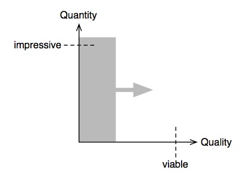
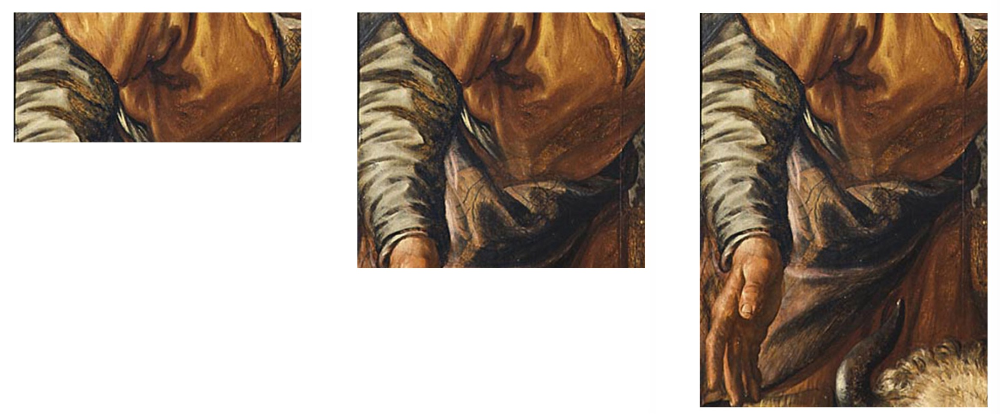
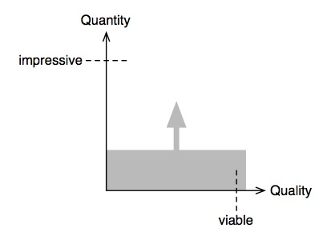
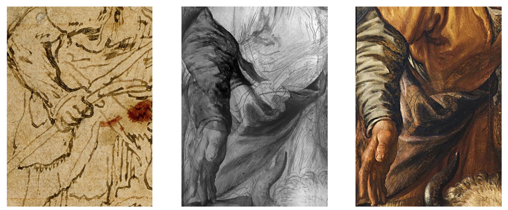
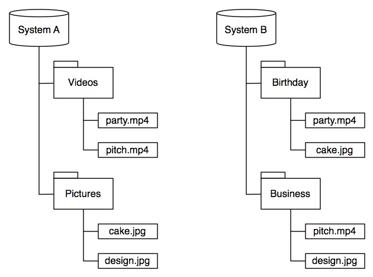
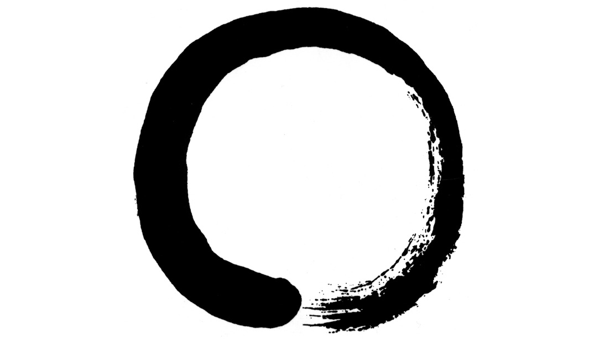

December 20, 2015 • Sebastian Fichtner
A buddy of mine asked me if I could eleborate on what we software developers know as an agile process. He wants to apply the agile thinking to other areas of life, even to professional projects in finance. Of course, he also asked that question all of us have when we want to immerse ourselves into a new subject: "What's a good book to get me started?"
He probably asked me because I sometimes drop terms like MVP, lean, agile or iterative. Anyone who really understands these terms knows what a catch-22 I've talked myself into.
The difficulty to explain the agile mind lies not in its complexity but in its simplicity. Let's face it: there is no process, no philosophy, nothing. There is just one simple truth. And like with any simple truth, we have no word for it.
When we try to reference a simple truth, we use an abundance of different terms as pointers to it. And this created a buzz word industry of books, seminars and talks on all things agile, very similar to the industry around spiritual truths.
Whether you're looking for the agile mind or the zen mind, the simple truths from which they arise have much in common:
I could, of course, recommend a few books on the matter. But that would be neither honest nor helpful. You can write a thousand books on a simple truth but to actualize that truth in your life you need no books at all.
The agile mind is not rocket science. When you get it, you practice it. That's it.
What, you're still reading? You want to hear my version of the agile mind in spite of everything I just wrote? Well, here we go...
The agile mind (Tao) has transcended the back and forth between scattered mind (Yin) and rigid mind (Yang). Most of us are too rigid to be agile. So the agile mind is best understood when contrasted with the rigid mind.
For the sake of argument, let's call a person with a rigid mind an engineer and a person with an agile mind an artist.
The type of mind (agile vs. rigid) is just one aspect of a fundamental dichotomy. The type of profession (artist vs. engineer) is another. We will now look at even more aspects of this dichotomy in order to illustrate the true principle behind the agile buzz words.
The engineer cares about quantity first. With quantity we mean the level of detail, sheer volume or number of features of the produced outcome. This leads to a cumulative process.

The engineer is process-oriented. While he follows a perfect process, he doesn't care much about the order in which he works on features or about completing a feature before moving on to the next. He tinkers in his garage where he impresses his friends with little tricks of technology.
The engineer's process starts at the details and integrates them into a working product later (bottom-up). He creates a lot of stuff before the outcome actually provides value. Would he create a painting, it would only convey meaning after he is finished:

The artist cares about quality first. The quality we mean includes the quality of overall structure. Without getting overall structure right, no thesis, book, painting or software has quality. This results in an iterative process.

The artist is outcome-oriented and always focuses on the most essential lacking feature. He quickly puts his work into a gallery or his product on the market where everyone can access it while only very few may initially be impressed.
The artist's process starts at the overall vision and fills in the details later (top-down). The outcome works during the whole process. When he creates a painting, the essential features are there from the beginning:

A true agile mind is a true artist's mind. But what makes a true artist? Let's go into that question more deeply.
The only thing the artist really cares about is what his produced outcome means. When he starts his process by envisioning a product or artwork, he clearly sees it from the perspective of the person who will ultimately use or appreciate it.
While the artist is the producer, he thinks from the perspective of the reciever. To throw out a buzz word: The artist's mind is always customer-centric.
The artist focuses fully on what the outcome could mean to other people. He doesn't need to think about process or techniques. There are certain preconditions to becoming such a true artist:
In summary, the artist values message over medium, function over form, content over technology, semantics over syntax, meaning over manifestation.
Domain-driven design is agile because it emphasizes the domain model (meaning) of software. Uncle Bob's Clean Architecture is agile because he emphasizes the intent (function) of software. SCRUM can be agile because it emphasizes producing customer value through an iterative process.
You already guessed it: Here at Flowtoolz, we aim to go beyond software engineering and even software craftsmanship. To us, creating software with agility means constantly striving to become software artists.
A software engineer might work on many different features without integrating them into a running application, while a software artist would focus on creating a releasable application with just the most essential feature.
A software engineer specializes on one aspect of the development process and works out how the application is being developed. A software artist takes a more holistic perspective and works out what application is being developed and why.
The software engineer is able to plan because he knows what features his client wants. He is done when he sees all features implemented. The software artist is able to adjust because he knows what features are most important. He is done when he feels diminishing returns.
Agility as a state of mind is not just a tool that helps you be more productive and successful. It is helpful and preferrable in every moment of life. So how do we cultivate the agile mind?
The first step of practicing agility is to be aware of how agile you act and what kind of thinking determines your actions. The challenge here is that we don't want to do this. We don't want to acknowledge how rigid and attached we really are.
Ask yourself how you structure your life, software, data, texts, paragraphs or thoughts. Do you structure things by meaning or by manifestation? That will tell you immediately who you are and how you can practice the agile mind.
Here is an example: Suppose you have these files:
Where would they locate on your computer? You have two options:

Be honest with yourself. If option A is more likely, you're attached to the form and technology of the files and care less about their function and content.
And why is that so? Because form, appearance, manifestation are immediatly apparent, while meaning is not. Attributing meaning to something requires mental effort. In the example, connecting the dots requires the owner of the files to think about what they actually mean.
You can do this exercise whenever you interact with the world. Ask yourself how you see the world. What kind of patterns do you create? Do you look into the essence of things or are you complacently stuck in the realm of appearances?
The agile mind is able to see things for what they are. It is able to let go, in every moment, of those alluring thoughts that would drag it down into a maelstrom of micro management. It is able to focus on a specific vision over a long time. It is able to let go of spontaneous inspirations when they are out of scope.

With an agile mind, you know what you want to achieve and reverse-engineer that outcome. You start with the end in mind. And after every step, you reflect on your direction. Ultimately, the agile mind is the zen mind.